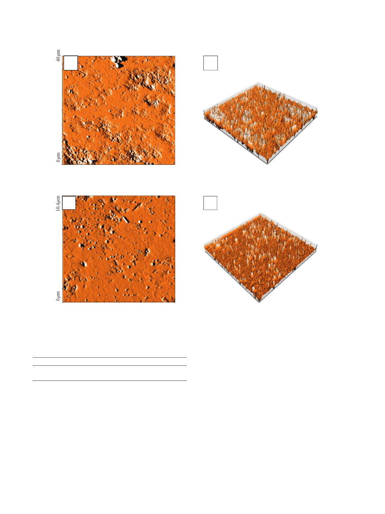

8
Topography-scan forward
A
International Journal of Microbiology
Topography-scan forward
A
X∗
0 µm
Y∗
Topography-scan forward
B
14.5 nm
–25.7 nm
X∗ 40 µm
Y∗ 40 µm
40 µm
(a)
B
Topography-scan forward
4.65 nm
X∗
–4.61 nm
X∗10.3 µm
Y∗10.4 µm
0 µm
10.4 µm
Y∗
(b)
Figure 5: Topography (3D images) of granite Gris Pinhel (a) and granite Rosa Porrino (b).
Table 1: Roughness values of Gris Pinhel and Rosa Porrino.
Granite sample
Gris Pinhel
Rosa Porrino
Roughness (nm)
12.40 ± 2.17
1.91 ± 0.98
counting) after 15 min and 30 min of treatment with 1.5and
2% of NaCLO. ese findings showed that sodium hypo-
chlorite appeared to be efficient against P. aeruginosa that
adhered to granite Gris Pinhel at the concentration of 1.5%
and 2% after 15 min, but it was less efficient against the one
formed on the granite Rosa Porrino whatever the time and
the concentration.
e surface coverage after NaCLO treatment was
quantified through the EP analysis (Figures 9 and 10). In the
case of granite Rosa, except for the treatment after 5 min, no
significant difference was pronounced after 10, 15, and
30 min when increasing the concentration up to 1, 1.5, and
2%. Similar results were obtained for Gris Pinhel after 5, 10,
and 15 min, while significance was noted after 30 min of
treatment when increasing the NaCLO concentration. ese
findings showed that P. aeruginosa biofilm persists on both
granites after treatment at different contact times and
concentrations, which can be clearly confirmed through the
fluorescent green observed on granite surfaces (Figures 11
and 12). In general, the PCM and the EP analyses show that
NaCLO is not efficient against P. aeruginosa biofilm which is
still attached and viable on the surface of Rosa Porrino, while
in case of Gris Pinhel even though it is still attached to the
surface but its viability was lost at the concentration of 1%
after 15 min of treatment where three hypotheses might be
given: the bacterium is still alive but lost its capacity to
develop; it is injured or died.
Martin-Espada et al. [2] reported that peracetic acid is
effective against P. aeruginosa biofilms which are formed on
polystyrene surfaces, inhibiting almost 100 % of the